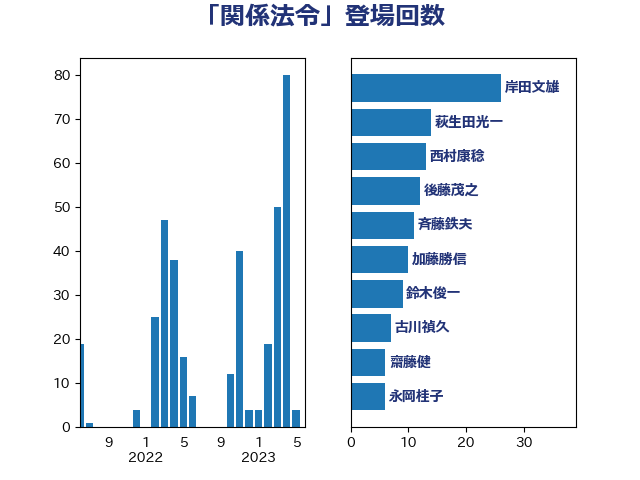

単語「関係法令」

| 岸田文雄 | 自由民主党 | 26 回 |
| 萩生田光一 | 自由民主党 | 14 回 |
| 西村康稔 | 自由民主党 | 13 回 |
| 後藤茂之 | 自由民主党 | 12 回 |
| 斉藤鉄夫 | 公明党 | 11 回 |
| 加藤勝信 | 自由民主党 | 10 回 |
| 鈴木俊一 | 自由民主党 | 9 回 |
| 古川禎久 | 自由民主党 | 7 回 |
| 齋藤健 | 自由民主党 | 6 回 |
| 永岡桂子 | 自由民主党 | 6 回 |
| 高木かおり | 日本維新の会 | 5 回 |
| 末松信介 | 自由民主党 | 5 回 |
| 中谷一馬 | 立憲民主党 | 5 回 |
| 松本剛明 | 自由民主党 | 4 回 |
| 高橋はるみ | 自由民主党 | 3 回 |
| 谷公一 | 自由民主党 | 3 回 |
| 水野素子 | 立憲民主党 | 3 回 |
| 松川るい | 自由民主党 | 3 回 |
| 木村次郎 | 自由民主党 | 3 回 |
| 岡田直樹 | 自由民主党 | 3 回 |
| 野田国義 | 立憲民主党 | 2 回 |
| 簗和生 | 自由民主党 | 2 回 |
| 福島伸享 | 無所属 | 2 回 |
| 田中英之 | 自由民主党 | 2 回 |
| 河野太郎 | 自由民主党 | 2 回 |
| 林芳正 | 自由民主党 | 2 回 |
| 本田顕子 | 自由民主党 | 2 回 |
| 岩谷良平 | 日本維新の会 | 2 回 |
| 山添拓 | 日本共産党 | 2 回 |
| 小野田紀美 | 自由民主党 | 2 回 |
| 小沼巧 | 立憲民主党 | 2 回 |
| 小宮山泰子 | 立憲民主党 | 2 回 |
| 宮崎政久 | 自由民主党 | 2 回 |
| 塩田博昭 | 公明党 | 2 回 |
| 堀内詔子 | 自由民主党 | 2 回 |
| 和田政宗 | 自由民主党 | 2 回 |
| 古賀篤 | 自由民主党 | 2 回 |
| 古川康 | 自由民主党 | 2 回 |
| 務台俊介 | 自由民主党 | 2 回 |
| 伊佐進一 | 公明党 | 2 回 |
| 三浦信祐 | 公明党 | 2 回 |
| 高橋千鶴子 | 日本共産党 | 1 回 |
| 野間健 | 立憲民主党 | 1 回 |
| 野田聖子 | 自由民主党 | 1 回 |
| 里見隆治 | 公明党 | 1 回 |
| 進藤金日子 | 自由民主党 | 1 回 |
| 赤澤亮正 | 自由民主党 | 1 回 |
| 西岡秀子 | 国民民主党 | 1 回 |
| 自見はなこ | 自由民主党 | 1 回 |
| 米山隆一 | 立憲民主党 | 1 回 |
| 笠井亮 | 日本共産党 | 1 回 |
| 竹内真二 | 公明党 | 1 回 |
| 稲富修二 | 立憲民主党 | 1 回 |
| 福重隆浩 | 公明党 | 1 回 |
| 石井正弘 | 自由民主党 | 1 回 |
| 田畑裕明 | 自由民主党 | 1 回 |
| 田村まみ | 国民民主党 | 1 回 |
| 浜田靖一 | 自由民主党 | 1 回 |
| 浅野哲 | 国民民主党 | 1 回 |
| 櫛渕万里 | れいわ新選組 | 1 回 |
| 柳ヶ瀬裕文 | 日本維新の会 | 1 回 |
| 柚木道義 | 立憲民主党 | 1 回 |
| 杉尾秀哉 | 立憲民主党 | 1 回 |
| 末次精一 | 立憲民主党 | 1 回 |
| 徳永久志 | 立憲民主党 | 1 回 |
| 川田龍平 | 立憲民主党 | 1 回 |
| 川合孝典 | 国民民主党 | 1 回 |
| 山際大志郎 | 自由民主党 | 1 回 |
| 山谷えり子 | 自由民主党 | 1 回 |
| 山田宏 | 自由民主党 | 1 回 |
| 山崎正恭 | 公明党 | 1 回 |
| 小池晃 | 日本共産党 | 1 回 |
| 小林鷹之 | 自由民主党 | 1 回 |
| 小倉將信 | 自由民主党 | 1 回 |
| 寺田稔 | 自由民主党 | 1 回 |
| 大家敏志 | 自由民主党 | 1 回 |
| 城井崇 | 立憲民主党 | 1 回 |
| 和田有一朗 | 日本維新の会 | 1 回 |
| 吉川ゆうみ | 自由民主党 | 1 回 |
| 井上哲士 | 日本共産党 | 1 回 |
| 中川正春 | 立憲民主党 | 1 回 |